Scenario:
CompliantSecure Company has fallen victim to a significant security breach initiated by a phishing email. An unsuspecting employee interacted with the malicious email, allowing the attacker to infiltrate the company's network. Leveraging this initial access, the attacker escalated privileges, gaining control over critical systems, including the Domain Controller.
This breach has resulted in substantial operational disruption, raising concerns about potential exposure or compromise of sensitive data. Your team has been assigned the critical task of investigating the incident to unravel the attack’s progression and assess the full scope of the compromise.
Network Diagram
Below is the provided network infrastructure diagram showing the key systems and network segments.
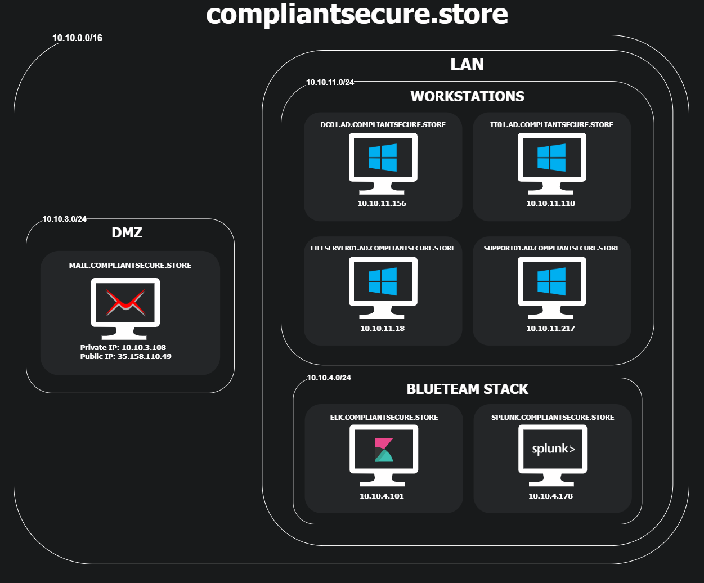
Executive Summary:
This investigation reconstructs a multi-stage intrusion against CompliantSecure that began with a phishing-related mail connection and a malicious ISO masquerading as an audit package. The downloaded NovaSecure_Audit_Findings.iso contained a shortcut that initiated execution of 23.dll through the legitimate Windows utility rundll32.exe. The resulting beacon injected a remote thread into ImagingDevices.exe, performed host and Active Directory reconnaissance, and communicated with external command-and-control infrastructure over TCP/443.
The attacker progressed from IT01 toward DC01, using credential-dumping tooling, explicit credentials belonging to markw, SMB-based lateral movement, and suspicious service-based execution. On the domain controller, the adversary attempted to establish persistence with a sql_admin account and installed AnyDesk for remote access. Subsequent activity included access to administrative credential-related files on a network share, archive creation (Shares.7z), and a browser download from webmail on Support01.
In the final observed stage, a payload executed from a network share was associated with Conti ransomware, and impacted hosts received the ransom-note file R3ADM3.txt. The records support system compromise and data staging; they do not independently establish confirmed data exfiltration or the full number of encrypted hosts.
Q1:
The Mail Server logs indicate a connection was made to a suspicious domain known for malicious email activities. What was the IP address of the domain involved in this connection?
I began by reviewing Postfix mail logs on MAIL01. Postfix is a mail transfer agent responsible for transporting email between mail servers, and its logs can provide useful evidence about SMTP activity.
Postfix logs can reveal:
- IP addresses of remote mail servers connecting to MAIL01.
- Sender and recipient email addresses.
- SMTP authentication attempts and failures.
- Email delivery status.
- Message queue IDs that link related events.
To narrow the investigation to SMTP activity recorded on the mail server, I used the following query:
host.hostname: *MAIL01* AND *postfix* AND *SMTPD*While reviewing the results, the Message field caught my attention because it contained details about incoming SMTP connections.
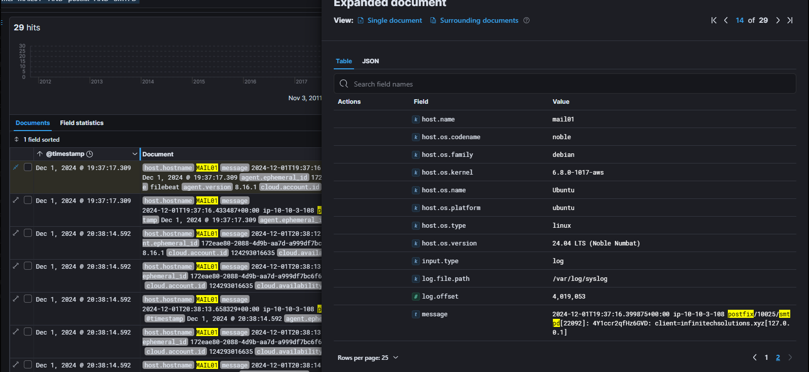
Further examination revealed a connection associated with the domain emkei.cz. Research into the domain indicated that Emkei is an email-spoofing service, making this connection particularly relevant to the phishing investigation.
The connection originated from the following IP address:
114.29.236.247The event was recorded on December 1, 2024, at 20:38:14.592.
Q2:
During the initial phase of the attack, a suspicious file was downloaded via a webmail client. The file's hash can help confirm its identity and origin. Identify the SHA256 hash of the downloaded file and provide it.
The question references a file downloaded through a webmail client, an email interface accessed through a browser, such as Outlook Web, Gmail, or Roundcube. I therefore looked for newly created files in user download and temporary directories around the phishing timeframe.
event.code: "11" AND @timestamp >= "2024-12-01T20:00:00Z" AND @timestamp <= "2024-12-01T23:30:00Z" AND (winlog.event_data.TargetFilename: *Downloads* OR file.path: *Downloads* OR file.path: *Temp*)
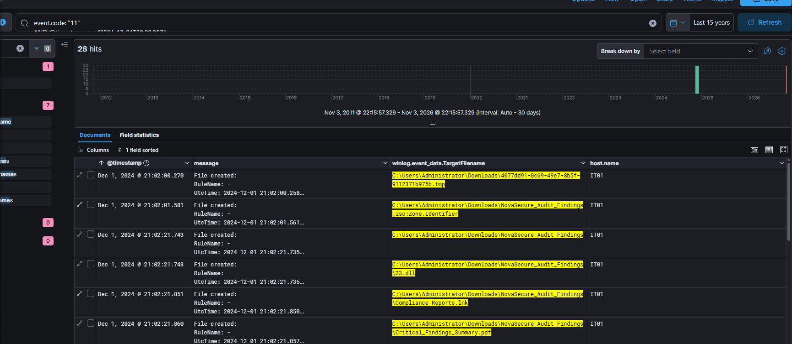
The file creation sequence drew my attention to NovaSecure_Audit_Findings.iso. Shortly after its arrival, Windows recorded additional files associated with the extracted contents:
| Time (UTC) | File created |
|---|---|
| 21:02:00 | Temporary .tmp file |
| 21:02:01 | NovaSecure_Audit_Findings.iso:Zone.Identifier |
| 21:02:21 | NovaSecure_Audit_Findings directory |
| 21:02:21 | NovaSecure_Audit_Findings\23.dll |
| 21:02:21 | NovaSecure_Audit_Findings\Compliance_Reports.lnk |
| 21:02:21 | NovaSecure_Audit_Findings\Critical_Findings_Summary.pdf |
I searched for the ISO filename to retrieve the recorded SHA-256 hash.
"NovaSecure_Audit_Findings.iso"
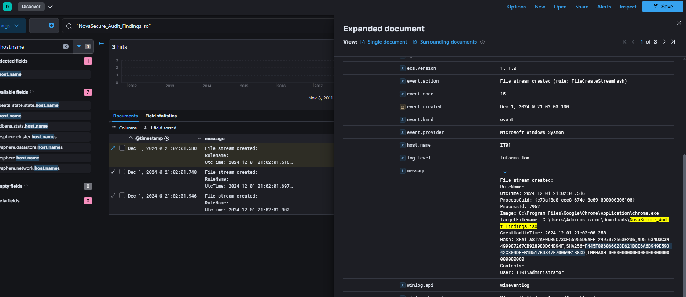
SHA-256:
F445F806066028D621D8E6A6B949E59342C309DFEB1D517BD847F70069B1B8DD
Q3:
During the investigation, it was identified that a file executed by the user initiated a series of events that led to the execution of malicious code. What is the name of the file executed by the user?
The extracted ISO contents included a DLL, a PDF, and a Windows shortcut (.lnk). Because shortcut files can execute commands or launch other programs, I focused on the LNK artifact as the likely user-triggered entry point.
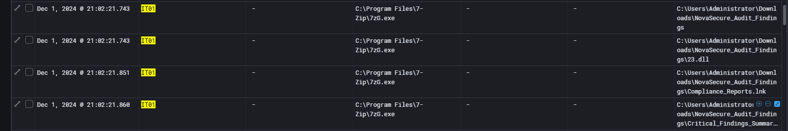
The executed file was:
Compliance_Reports.lnk
The LNK's presence among ostensibly legitimate audit documents is significant: a shortcut can disguise the malicious execution path behind a document-like name.
Q4:
Following the execution of the previous file, a file was loaded and executed by a legitimate Windows utility as part of the attack chain. What is the name of this file?
I reviewed Sysmon Event ID 1 process creation records on IT01 around the ISO extraction and shortcut execution timeframe.
event.code: "1" AND @timestamp >= "2024-12-01T20:55:00Z" AND @timestamp <= "2024-12-02T01:30:00Z" AND host.name:IT01
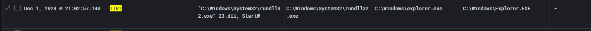
At 21:02:57 UTC, the following command appeared:
"C:\Windows\System32\rundll32.exe" 23.dll, StartW
| Component | Explanation |
|---|---|
rundll32.exe |
Legitimate Windows utility used to load DLLs and invoke exported functions |
23.dll |
The DLL loaded by the utility |
StartW |
The exported function invoked from the DLL |
This is a case of living-off-the-land execution: the attacker used a trusted Windows utility to run code from a suspicious DLL rather than launching an obviously malicious executable directly. The surrounding sequence places 7zG.exe at 21:02:17, creation of 23.dll at 21:02:21, and rundll32.exe execution at 21:02:57.
Answer: 23.dll
Q5:
The beacon spawned an instance of a specific executable. What is the name of the created process?
ImagingDevices.exe
Continuing through the IT01 process creation records, I identified ImagingDevices.exe as the process associated with the beacon's subsequent activity.
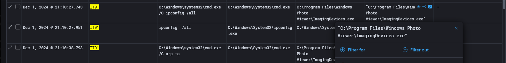
At 21:10:27 UTC, this process spawned a command shell to run:
cmd.exe /C ipconfig /all
The subsequent commands included:
cmd.exe /C arp -a
cmd.exe /C nbtstat -n
| Command | Purpose |
|---|---|
ipconfig /all |
Enumerate network interfaces, DNS configuration, and IP settings |
arp -a |
Examine the local ARP cache |
nbtstat -n |
Enumerate local NetBIOS names |
These are typical host and network discovery commands. Their execution from ImagingDevices.exe was especially important once I correlated the process with a remote-thread creation event in Q7.
Answer: ImagingDevices.exe
Q6:
On DC01, the attacker dropped a compressed archive, likely staging for malicious activities. They then executed a command to extract its contents. What was the exact command used for this operation?
The attacker's reconnaissance also included discovery of the Active Directory environment. Two useful examples were:
nltest /dclist:compliantsecure.store
nltest /domain_trusts
The first enumerates domain controllers; the second lists domain trust relationships. Both can help identify additional systems and possible lateral movement paths.
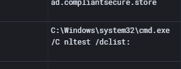
I then pivoted to DC01 and reviewed Sysmon process creation records:
event.code: "1" AND @timestamp >= "2024-12-01T20:55:00Z" AND @timestamp <= "2024-12-02T03:30:00Z" AND host.name:*DC01*
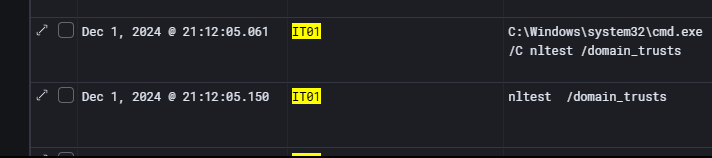
At 22:07:21 UTC, the attacker executed:
7zr.exe x 1.7z
| Component | Purpose |
|---|---|
7zr.exe |
7-Zip command-line extraction utility |
x |
Extract the archive, preserving directory structure |
1.7z |
The archive being extracted |
Only 23 seconds later, at 22:07:44, the following account-creation command was observed:
net user sql_admin P@ssw0rd! /add
The process lineage showed rundll32.exe spawning command shells used for archive extraction and account creation. This connects a DLL-based execution chain with subsequent account-related activity on the domain controller.
Answer: 7zr.exe x 1.7z
Q7:
A process injection occurred on IT01, where a new thread was created in the target process to execute malicious code. What was the start address of the injected code within the target process?
To investigate possible process injection, I searched for Sysmon Event ID 8 (CreateRemoteThread) on IT01:
event.code: "8" AND @timestamp >= "2024-12-01T20:55:00Z" AND @timestamp <= "2024-12-02T03:30:00Z" AND host.name:*IT01*
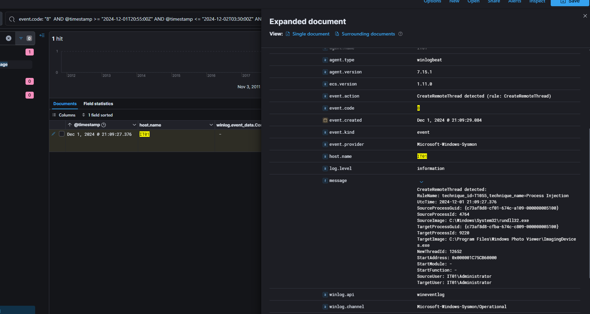
The event recorded the following relationship:
| Field | Value |
|---|---|
| Timestamp | December 1, 2024, 21:09:27 UTC |
| Source process | rundll32.exe |
| Source PID | 4764 |
| Target process | ImagingDevices.exe |
| Target PID | 9220 |
| New thread ID | 12652 |
| Start address | 0x000001C75CB60000 |
| MITRE ATT&CK | T1055 — Process Injection |
This event provides a key link in the attack chain: rundll32.exe loaded the malicious DLL, created a remote thread in ImagingDevices.exe, and then later went on to execute discovery commands. A CreateRemoteThread event is strong injection evidence in this context, although the precise injected code contents are not established by the event alone.
Answer:
0x000001C75CB60000
Q8:
The attacker’s sequence of commands shows a focus on domain-specific reconnaissance on IT01. Which command was executed to explore domain trust relationships within the environment?
While examining the command line activity spawned through ImagingDevices.exe, I encountered the following domain reconnaissance command:
nltest /domain_trusts
nltest /domain_trusts enumerates trust relationships for the current domain. In an intrusion, this can help an attacker determine whether additional domains or forests might be reachable through existing trust relationships.
Answer: nltest /domain_trusts
Q9:
Network scanning activity was observed across the environment on DC01, focusing on key systems with straightforward network reachability tests. Further investigation revealed that the attacker utilized a script to automate these actions. What was the name of the script used in this operation?
I investigated process creation events on DC01 to identify the automated network reachability checks:
event.code: "1" AND @timestamp >= "2024-12-01T20:55:00Z" AND @timestamp <= "2024-12-02T03:30:00Z" AND host.name:*DC01*
At December 1, 2024, 22:27:12.392, the parent command line exposed the batch script:
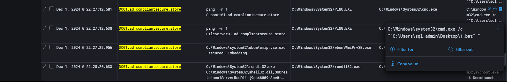
C:\Windows\system32\cmd.exe /c "C:\Users\sql_admin\Desktop\1.bat"
The script launched commands including:
ping -n 1 Support01.ad.compliantsecure.store
ping -n 1 FileServer01.ad.compliantsecure.store
The -n 1 argument sends one ICMP echo request per target, allowing the script to quickly determine which internal hosts respond.
Answer: 1.bat
Q10:
On IT01, The attacker dropped a tool for credential dumping during the attack. What is the full path where this tool was created on the system?
During my review of IT01 Sysmon Event ID 1 records, I found a process associated with the credential-dumping utility ProcDump.
event.code: "1" AND @timestamp >= "2024-12-01T20:55:00Z" AND @timestamp <= "2024-12-02T03:30:00Z" AND host.name:*IT01*
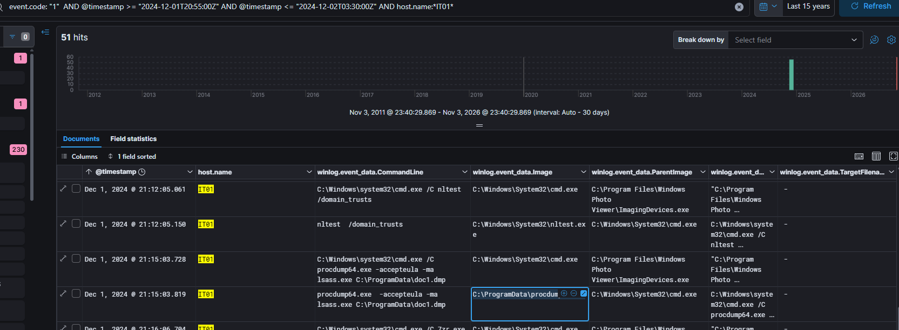
The utility was located at:
C:\ProgramData\procdump64.exe
ProcDump is a legitimate Sysinternals tool, but attackers can abuse it to create memory dumps of sensitive processes such as LSASS. Its presence is suspicious here because of the surrounding intrusion activity.
Q11:
Timing is critical for understanding the attacker’s actions and reconstructing the sequence of events. What was the timestamp when the attacker executed the credential dumping operation?
I correlated the credential-dumping activity identified in the preceding question with its recorded execution timestamp. The event was logged at:
2024-12-01 21:15:03.819
This timestamp anchors the credential-access stage of the investigation and allows it to be compared with the earlier process injection and later explicit-credential authentication events. Time is reported as recorded in the investigation notes.
Q12:
the attacker dropped a compression tool on IT01. What is the full path where this tool was created on the system?
The same IT01 process creation investigation revealed use of the standalone 7-Zip command-line extractor, 7zr.exe.
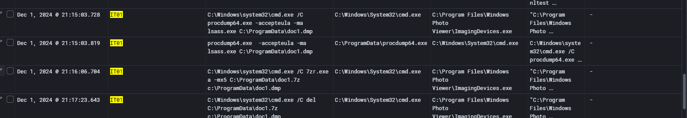
Expanding the process event exposed its working directory and execution context:
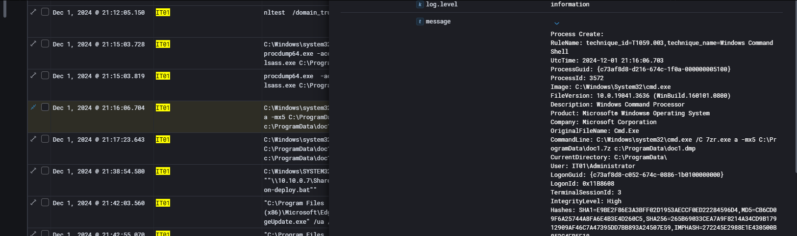
The associated path identified in the investigation was:
C:\ProgramData\7zr.exe
Because the command line referenced 7zr.exe without a full path, the working directory helped identify where it was being run. A current directory is useful supporting evidence, although ideally the complete Image or a file-creation event should be used to confirm the executable's exact on-disk location.
Q13:
Due to a weak password, the attacker quickly cracked the credentials of a domain administrator account and used them to explicitly authenticate on IT01, gaining domain admin privileges. What is the username of the account whose credentials were stolen?
The question describes the attacker obtaining a domain administrator's credentials and then authenticating explicitly on IT01. Windows Security Event ID 4648 is a useful starting point because it records a logon attempt made using explicit credentials.
event.code: "4648" AND @timestamp >= "2024-12-01T20:55:00Z" AND @timestamp <= "2024-12-02T03:30:00Z" AND host.name:*IT01*
The query returned four relevant events around 22:03 UTC, including an explicit-credential attempt associated with the user:
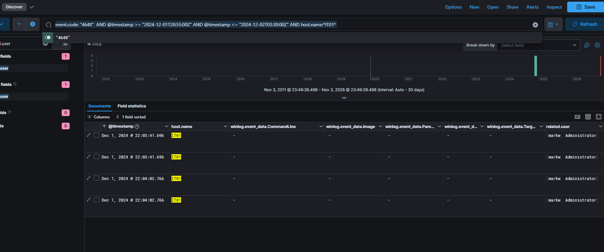
markw
Event ID 4648 establishes that explicit credentials were supplied for authentication. This heavily indicates that the malicious actor was able to successfuly aquire credentials from their credential dumping acticities seen previously.
Q14:
A specific port was used during the lateral movement from IT01 to DC01. What was the port number?
The lateral movement between IT01 and DC01 involved TCP port 445, the standard port for SMB file sharing and administrative shares.
445
During the DC01 investigation, I also encountered a command accessing a remote SMB share:
"C:\Windows\system32\NOTEPAD.EXE" "\\10.10.11.18\Shares\IT\Admin_Passwords_v3_HASHED.csv"
This separate observation reinforced the presence of SMB activity in the attack, although it accesses a file server rather than independently proving every detail of the IT01-to-DC01 connection. I also observed TCP/445 traffic during the lateral movement timeframe.
Q15:
The malicious executable was stored in a shared location before execution. What was the full path where the executable was first created on DC01?
I pivoted to Sysmon Event ID 11 (FileCreate) on DC01, filtering for newly created executable files:
event.code: "11" AND @timestamp >= "2024-12-01T20:55:00Z" AND @timestamp <= "2024-12-02T03:30:00Z" AND host.name:*DC01* AND winlog.event_data.TargetFilename:*.exe*
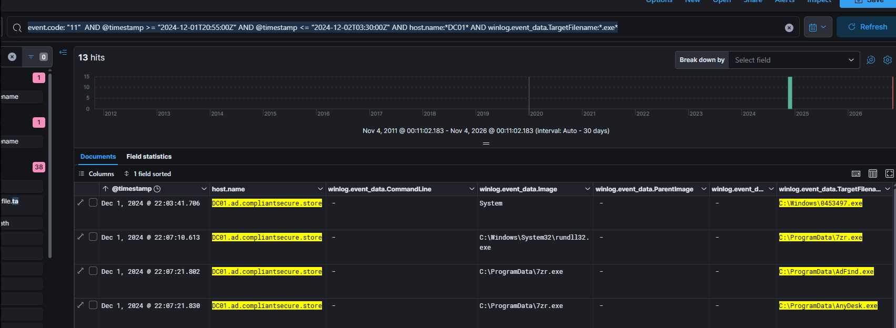
At December 1, 2024, 22:03:41.706, I identified the suspicious file:
C:\Windows\0453497.exe
An unusually named executable created directly under C:\Windows during active lateral movement warrants investigation, particularly when correlated with subsequent service-based execution.
Q16:
The attacker initiated an RDP connection to DC01 using a compromised account. What is the name of the attacker's workstation?
My first approach was to search for Event ID 4624, Logon Type 10, which commonly records successful RDP sessions. However, the expected attacker workstation name was not available in those events.
I broadened the search to authentication events involving DC01 and the compromised account:
host.name: *DC01* AND *markw* AND @timestamp >= "2024-12-01T20:55:00Z" AND @timestamp <= "2024-12-02T03:30:00Z"
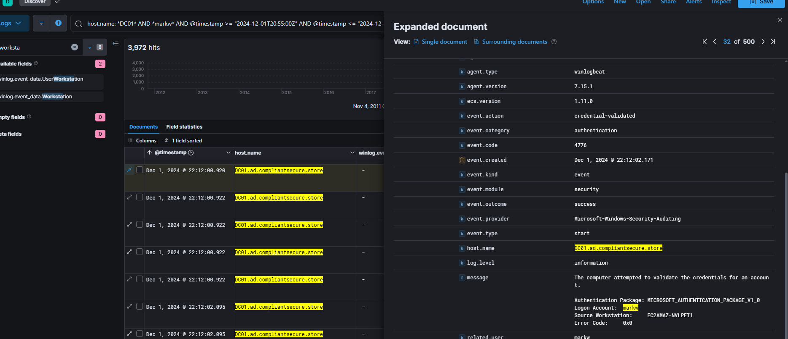
This led me to Windows Security Event ID 4776, which records credential validation using NTLM authentication. At December 1, 2024, 22:12:00.920, the event contained the workstation name:
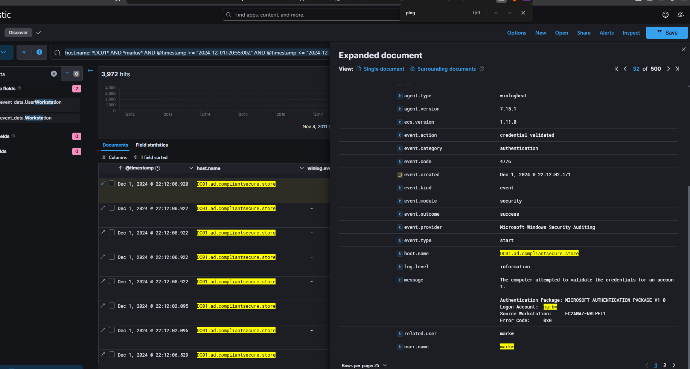
EC2AMAZ-NVLPEI1
The distinction is important: 4624 describes a logon event on a computer, while 4776 describes NTLM credential validation, often on a domain controller.
Q17:
The attacker utilized the remote access tool to establish a connection to the system and performed the first interactive login using the created account for persistence. At what time did this logon occur?
The attacker had previously attempted to create the sql_admin account on DC01. To find its first interactive logon, I searched successful logon events for that user:
host.name: *DC01* AND event.code:4624 AND @timestamp >= "2024-12-01T20:55:00Z" AND @timestamp <= "2024-12-02T03:30:00Z" AND related.user:*sql*
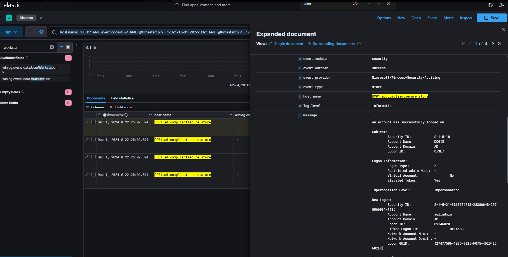
The relevant record was a 4624 Logon Type 2, indicating a local interactive logon, at approximately:
2024-12-01 22:25
Although the scenario refers to a remote access tool, Logon Type 2 is an interactive console-style logon, not the usual RDP Logon Type 10. The recorded event establishes the interactive logon type and timestamp.
Q18:
Performed lateral movement to DC01. To establish persistence, they installed a malicious service on DC01. What was the name of the service created on DC01?
I reviewed Windows System Event ID 7045 on DC01, which records a new Windows service installation:
host.name: *DC01* AND event.code:7045 AND @timestamp >= "2024-12-01T20:55:00Z" AND @timestamp <= "2024-12-02T03:30:00Z"
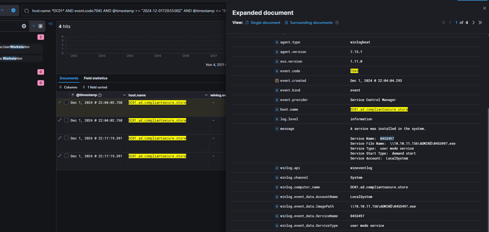
One suspicious service installation referenced this executable:
\\10.10.11.156\ADMIN$\0453497.exe
The use of an administrative SMB share and a service running as LocalSystem is consistent with remote service-based execution. Service name seen in screenshot.
Q19:
To establish persistence on DC01, the attacker created a new local user account and elevated its privileges. What were the username and password set for this account?
While investigating process creation events on DC01, I had already identified a command attempting to create a local account shortly after archive extraction:
net user sql_admin P@ssw0rd! /add
The account and password specified in the command were:
Username: sql_admin
Password: P@ssw0rd!
The /add parameter creates a user account.
Q20:
The attacker installed a remote access tool on DC01 to enable persistent remote access and ensure continued control over the system. At what exact time was this service installed?
While reviewing DC01 Event ID 7045 service installations for the preceding question, I also observed creation of an AnyDesk service shortly after the suspicious remote service activity.
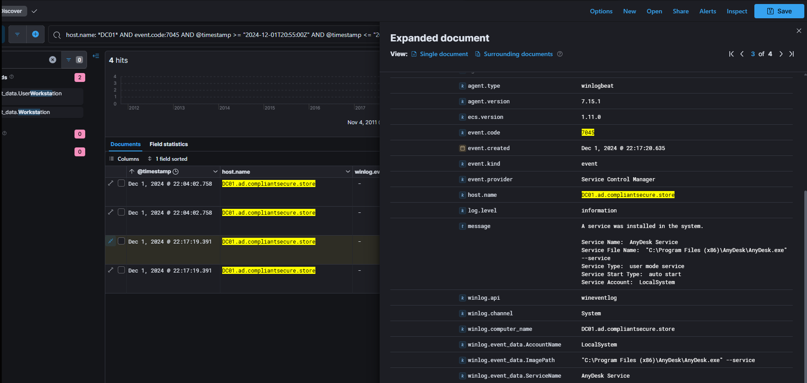
The recorded installation time was approximately:
2024-12-01 22:17
AnyDesk is legitimate remote access software, but an unexpected installation on a domain controller during an intrusion provides a potential method for persistent interactive access.
Q21:
After executing the reconnaissance script, the attacker directed their efforts toward a network folder share. Navigating through the shared directories, they stumbled upon a file that potentially contained critical information. This file was subsequently opened. What was the name of the file accessed by the attacker in this operation?
I returned to the DC01 Sysmon Event ID 1 records to follow the activity after the 1.bat network discovery script.
host.name: *DC01* AND event.code:1 AND @timestamp >= "2024-12-01T20:55:00Z" AND @timestamp <= "2024-12-02T03:30:00Z"
At December 1, 2024, 22:29:46.591, Notepad was launched with a CSV file on a remote SMB share:
"C:\Windows\system32\NOTEPAD.EXE" \\10.10.11.18\Shares\IT\Admin_Passwords_v3_HASHED.csv
The file server was 10.10.11.18, and the file was:
Admin_Passwords_v3_HASHED.csv
The filename suggests the document could hold sensitive administrative credential material, making this a noteworthy discovery and collection opportunity. Its actual contents were not included in the supplied evidence.
Q22:
The attacker leveraged an RDP connection from DC01 to FileServer01 to access and collect sensitive documents. After gathering the files, the attacker used a compression utility to archive them into a single file, preparing the data for exfiltration. What was the name of the compressed file created by the attacker during this operation?
Following access to network shares on FILESERVER01, I reviewed process creation events on DC01 for file staging or archiving activity:
host.name: *DC01* AND event.code:1 AND @timestamp >= "2024-12-01T20:55:00Z" AND @timestamp <= "2024-12-02T03:30:00Z"
At December 1, 2024, 22:38:24 UTC, the attacker executed:
7zr.exe a -t7z Shares.7z Shares
Here, a tells 7-Zip to add files to an archive, -t7z selects the 7z format, Shares.7z names the output archive, and Shares identifies the source directory. This indicates that collected share data was packaged into:
Shares.7z
The archive's creation is consistent with data staging for potential exfiltration; this command alone does not prove that the archive was transferred outside the environment.
Q23:
The attacker initiated an RDP connection from their workstation to Support01 and accessed the mail server through a web browser. Using compromised credentials—reused by the domain admin for both Active Directory and the mail server—they successfully logged in. Then, the attacker downloaded a file containing potentially sensitive information from the compromised email account.
The next lead involved Support01, where the attacker accessed webmail using the compromised markw identity. I searched file creation activity associated with Chrome:
host.name: *Support01* AND event.code: "11" AND winlog.event_data.Image: *chrome.exe AND @timestamp >= "2024-12-01T22:00:00Z" AND @timestamp <= "2024-12-02T03:30:00Z"
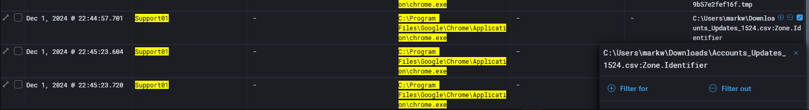
At December 1, 2024, 22:44:57.701, Chrome created evidence associated with a downloaded CSV in the markw user profile.
| Field | Value |
|---|---|
| Host | Support01 |
| Timestamp | 2024-12-01 22:44:57.701 |
| Process | chrome.exe |
| User profile | markw |
| Downloaded file candidate | Accounts_Updates_1524.csv |
The :Zone.Identifier suffix is an NTFS Alternate Data Stream (ADS) commonly associated with Mark-of-the-Web (MotW) metadata. In this case, its creation by Chrome supports the conclusion that the CSV was downloaded through the browser.
Identified file: Accounts_Updates_1524.csv
Q24:
Following the execution of the initial access malicious file, a network connection was established with a Command and Control (C2) server. What is the destination IP address and port to which the connection was made?
To identify the initial beacon's outbound connection, I searched Sysmon Event ID 3 (NetworkConnect) on IT01:
host.name: *IT01* AND event.code:3 AND @timestamp >= "2024-12-01T20:55:00Z" AND @timestamp <= "2024-12-02T03:30:00Z"
I then focused on the processes implicated in initial execution, especially rundll32.exe.
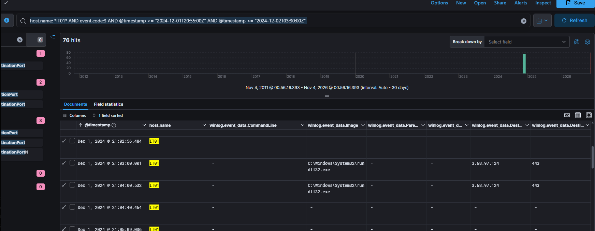
The timeline showed rundll32.exe executing 23.dll through its StartW export at 21:02:57, connecting to the following destination around 21:03:00, and connecting again around 21:04:00:
3.68.97.124:443
This network activity preceded the process injection into ImagingDevices.exe at 21:09:27, connecting the original DLL execution to the first observed external C2 destination.
Q25:
The spawned process by the beacon established a network connection to another external Command-and-Control (C2) server. What is the IP address and port of the C2 server that was contacted?
I first tried Sysmon Event ID 3, but it did not return the connection made by the injected ImagingDevices.exe process. I therefore pivoted to Windows Security Event ID 5156, which records connections permitted by the Windows Filtering Platform (WFP) when the relevant audit policy is enabled.
host.name: *IT01* AND event.code: "5156" AND message: *ImagingDevices*
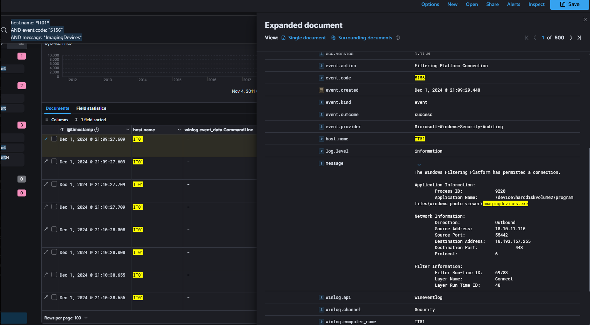
The event contained the following details:
| Field | Value |
|---|---|
| Host | IT01 |
| Event | 5156 — WFP permitted connection |
| Source process | ImagingDevices.exe |
| Process ID | 9220 |
| Destination IP | 18.193.157.255 |
| Destination port | 443 |
| Timestamp | 2024-12-01 21:09:27.669 UTC |
The correlation is particularly strong: Sysmon Event ID 8 recorded rundll32.exe creating a remote thread in ImagingDevices.exe at 21:09:27.376, while Event ID 5156 recorded the process connecting out at 21:09:27.669—approximately 293 milliseconds later.
Answer:
18.193.157.255:443
This illustrates why searching multiple telemetry sources matters: Event ID 5156 may expose a permitted connection that is absent from the available Sysmon Event ID 3 records. An allowed connection is not, by itself, proof of successful application-layer C2 communication, but the surrounding injection evidence makes this connection highly suspicious.
Q26:
After obtaining domain admin privileges on DC01, the attacker established a network connection to an external Command-and-Control (C2) server. What was the destination IP address and port of this connection?
On DC01, I searched Sysmon Event ID 3 for outbound network activity following the attacker's domain controller compromise:
host.name: *DC01* AND event.code:3 AND @timestamp >= "2024-12-01T20:55:00Z" AND @timestamp <= "2024-12-02T03:30:00Z"
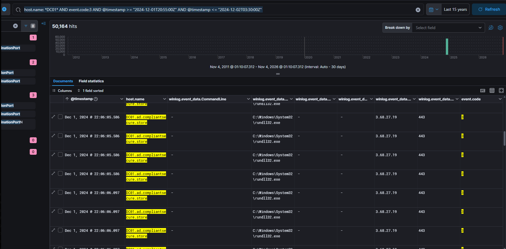
The results showed a high volume of outbound connections to:
3.68.27.19:443
The repeated connections from the compromised DC01 host, in conjunction with the other malicious activity, identified this destination as the additional C2 endpoint described in the lab.
Q27:
The attacker placed a malicious file in a shared folder accessible across the network and executed it remotely on multiple machines. What was the path from which the malicious file was executed?
During the later stages of the investigation, I observed suspicious execution of patch.exe from a network share. The activity was also associated with the creation of ransom-related text files on affected systems.
The executable path was:
\\10.10.11.18\Shares\patch.exe
To verify execution across endpoints, I used a broad process creation search:
event.code: "1"
AND winlog.event_data.Image: *patch.exe
Because the executable was stored on a shared SMB path, the same payload could be launched remotely across multiple hosts without requiring a unique local file path on each machine.
Q28:
The malware executed across multiple machines on the network was identified as part of a well-known ransomware family. What is the name of the ransomware family associated with the malware?
I used the suspicious ransomware executable identified in the previous question to obtain its SHA-256 hash:
D9243AF49F96C8B66715287D0DC26DBD82EAB8570D5F20629DDF9E5FE06C051C
A VirusTotal lookup associated the hash with the Conti ransomware family.
Answer: Conti
This identification is based on the hash reputation result documented in the investigation, it should be treated as a malware-family association rather than independent proof of the operator's identity.
Q29:
A message files were dropped on the infected systems, which likely contained ransom instructions. What was the name of the message file dropped by the malware?
The ransomware execution was accompanied by the creation of a message file on affected systems. The identified filename was:
R3ADM3.txt
Ransomware commonly drops note files to communicate payment instructions or other demands to victims. In this investigation, R3ADM3.txt is an impact artifact that can help defenders locate additional affected systems.
Attack Timeline
Events below reflect timestamps recorded in the investigation notes. The notes generally use UTC; a few entries are approximate to the minute.
| Date / Time (UTC) | Host / Stage | Observed activity |
|---|---|---|
2024-12-01 20:38:14.592 | MAIL01 | Suspicious Postfix SMTP connection from 114.29.236.247 associated with emkei.cz |
2024-12-01 21:02:01 | IT01 | NovaSecure_Audit_Findings.iso Mark-of-the-Web metadata recorded |
2024-12-01 21:02:17–21:02:21 | IT01 | 7zG.exe launched and ISO-associated files, including 23.dll and Compliance_Reports.lnk, appeared |
2024-12-01 21:02:57 | IT01 | rundll32.exe invoked 23.dll, StartW |
2024-12-01 21:03:00 | IT01 | rundll32.exe connected to 3.68.97.124:443; another connection recorded around 21:04 |
2024-12-01 21:09:27.376 | IT01 | rundll32.exe created a remote thread in ImagingDevices.exe |
2024-12-01 21:09:27.669 | IT01 | ImagingDevices.exe connected to 18.193.157.255:443 (WFP Event 5156) |
2024-12-01 21:10:27 | IT01 | ImagingDevices.exe spawned host and network reconnaissance commands |
2024-12-01 21:15:03.819 | IT01 | Credential-dumping operation timestamp |
2024-12-01 ~22:03 | IT01 / DC01 | Explicit credential use involving markw; DC01 executable created at 22:03:41.706 |
2024-12-01 22:07:21 | DC01 | 7zr.exe extracted 1.7z |
2024-12-01 22:07:44 | DC01 | Command attempted to create sql_admin account |
2024-12-01 22:12:00.920 | DC01 | NTLM validation event recorded attacker workstation EC2AMAZ-NVLPEI1 |
2024-12-01 ~22:17 | DC01 | AnyDesk service installation observed |
2024-12-01 ~22:25 | DC01 | sql_admin interactive logon (Event 4624, Logon Type 2) |
2024-12-01 22:27:12.392 | DC01 | 1.bat automated ping checks against internal hosts |
2024-12-01 22:29:46.591 | DC01 / FileServer01 | Notepad opened Admin_Passwords_v3_HASHED.csv from SMB share |
2024-12-01 22:38:24 | DC01 | 7zr.exe created Shares.7z archive |
2024-12-01 22:44:57.701 | Support01 | Chrome downloaded Accounts_Updates_1524.csv or created its Zone.Identifier |
Time not specified | Multiple systems | patch.exe executed from network share; Conti-associated ransomware and R3ADM3.txt observed |
Indicators of Compromise (IOC)
These indicators include malicious artifacts, contextual host/user identifiers, and attack infrastructure observed in the lab.
| Type | Indicator | Significance |
|---|---|---|
| External IP | 114.29.236.247 | Suspicious SMTP connection to MAIL01 |
| Domain | emkei.cz | Email-spoofing service associated with observed SMTP activity |
| Internal host | MAIL01 / 10.10.3.108 | Mail server investigated for initial phishing activity |
| Initial payload | NovaSecure_Audit_Findings.iso | Downloaded ISO containing suspicious LNK and DLL artifacts |
| SHA-256 — ISO | F445F806066028D621D8E6A6B949E59342C309DFEB1D517BD847F70069B1B8DD | Hash of the downloaded ISO |
| Shortcut | Compliance_Reports.lnk | User-executed shortcut linked to initial malicious execution |
| DLL | 23.dll | DLL executed through rundll32.exe StartW |
| Process | rundll32.exe | Legitimate utility used to load suspicious DLL and initiate injection |
| Injected process | ImagingDevices.exe | Remote thread target and second outbound C2 process |
| Thread start address | 0x000001C75CB60000 | Observed Sysmon Event 8 remote-thread start address; memory-specific |
| C2 | 3.68.97.124:443 | Initial rundll32.exe outbound connection |
| C2 | 18.193.157.255:443 | Outbound connection from injected ImagingDevices.exe |
| C2 | 3.68.27.19:443 | Repeated DC01 connections |
| Credential access tool | C:\ProgramData\procdump64.exe | ProcDump found on IT01 |
| Compression tool | C:\ProgramData\7zr.exe | 7-Zip extraction utility on IT01 |
| Archive | 1.7z | Archive extracted on DC01 |
| Dropped executable | C:\Windows\0453497.exe | Executable created on DC01 |
| Remote service path | \\10.10.11.156\ADMIN$\0453497.exe | Suspicious service executable over ADMIN$; service name not supplied |
| Created account | sql_admin | Persistence-related account attempted on DC01 |
| Credential | P@ssw0rd! | Password specified for sql_admin in account-creation command |
| Compromised account | markw | Explicit-credential authentication and Support01 activity |
| Workstation | EC2AMAZ-NVLPEI1 | Workstation name in NTLM Event 4776 |
| Remote access | AnyDesk | Remote access tool installed on DC01 |
| Recon script | C:\Users\sql_admin\Desktop\1.bat | Automated internal connectivity checks |
| Sensitive file | Admin_Passwords_v3_HASHED.csv | Credential-related CSV accessed from SMB share |
| Internal share | \\10.10.11.18\Shares\IT\ | Share containing credential-related CSV |
| Data staging archive | Shares.7z | Compressed collection of shared files |
| Downloaded CSV | Accounts_Updates_1524.csv | Browser download candidate on Support01 |
| Ransomware payload | \\10.10.11.18\Shares\patch.exe | Executable launched from SMB share |
| SHA-256 — ransomware | D9243AF49F96C8B66715287D0DC26DBD82EAB8570D5F20629DDF9E5FE06C051C | Hash associated with Conti via reputation lookup |
| Ransomware family | Conti | Ransomware-family association in lab investigation |
| Ransom note | R3ADM3.txt | Message artifact dropped on affected systems |